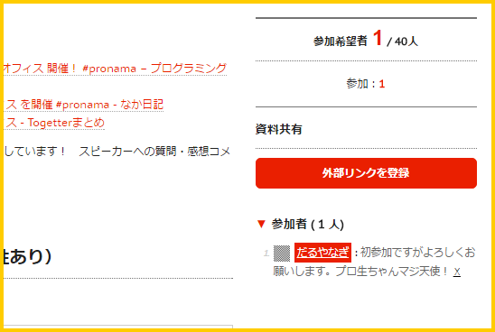

今年もやります！ プログラミング生放送勉強会＠サイボウズ株式会社 松山オフィス
公開日：
今年もプログラミング生放送勉強会が、愛媛・松山で開催されることになりました。場所を貸してくださることになったサイボウズさん、交渉してくださったなかじ先生、ありがとうございます。もうすでにスピーカーを引き受けてくださる方がいて、今からとても楽しみ。今年もいろいろ楽しく、お勉強できたなーと思います。
ちなみにプログラミング生放送勉強会（プロ生）というのは、IT 関連の話題で楽しくお勉強する会です。別にジャンルは問いません。AWS でも Docker でも Prolog でもいいし、Google でお昼ご飯食べた話や、シリコンバレー行ったついでにホモストリートを探検した話でもいいです。なんでもいいので、軽く IT に関係のあるお話をもってきてもらって、興味の幅を広げていただければと思います。オンラインでの放送もあると思うので、「くっそー！ 愛媛で鯛めしとジャコカツ食って、道後温泉入りたかったのになぁ！ くっそー！」って方も、リモートで参加して空気だけでも感じていただければ。
もちろん、セッションやライトニングトークも受け付けています。度胸試しに、何かしゃべりたいことがある、俺の偉大な発明を見ろ、そんな感じのことを募集しています。
懇親会にもぜひ参加していただければと思います。
ちなみに前回はこんな感じだった気がします。
僕はいろいろ悲しい目に遭いましたが、みんなが楽しんでくれたらうれしいです。
追伸

寂しいんで早めに登録を済ませていただけると嬉しいです。